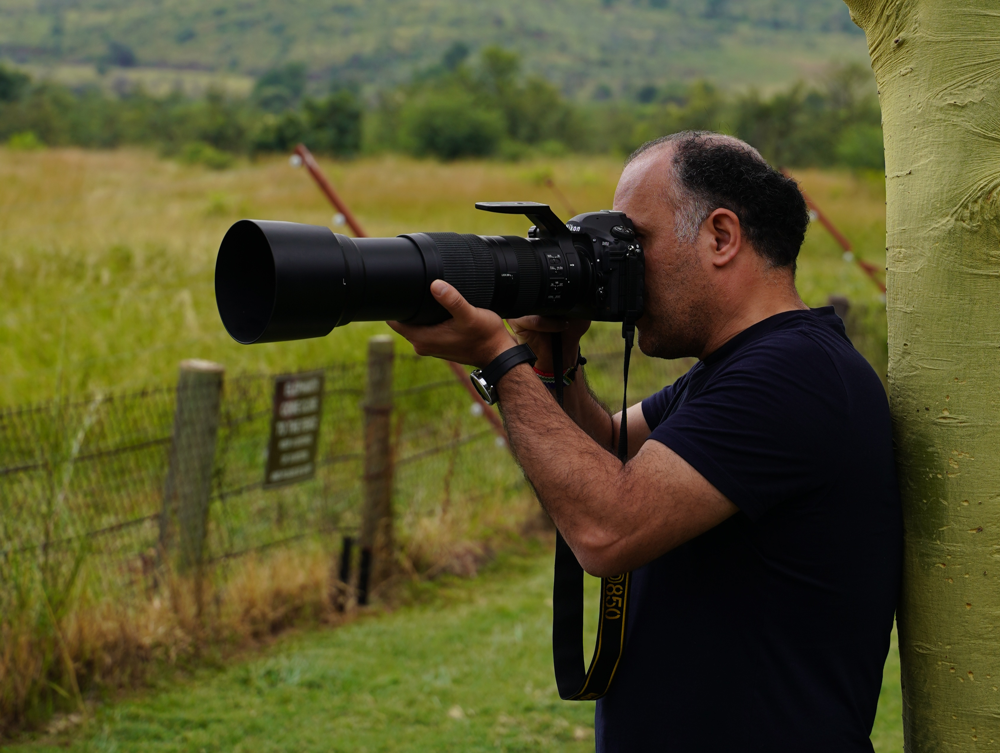

من مهدی عبدی هستم؛ جهانگرد، خبرنگار، عکاس، مستندساز و تورلیدر بینالمللی.
پیش از سال ۱۳۸۶، به بیشتر استانهای ایران سفر کرده و آنها را دیده بودم. از سال ۱۳۸۶ سفرهای خارجیام را آغاز کردم و در طول این سالها به ۴۲ کشور در چهار قاره اروپا، آسیا، آفریقا و آمریکا سفر کردهام و بیش از ۱۰۰۰ شهر را دیدهام. همچنین در ۶ کشور زندگی کردهام.
از سال ۱۳۹۶ نوشتن برای روزنامهها و مجلات حوزه گردشگری را آغاز کردم. برخی از مطالب و گزارشهایم نیز به زبانهای دیگر ترجمه شده و در نشریاتی در اتحادیه اروپا منتشر شدهاند.
در نمایشگاه عکس بینالمللی تهران و همچنین نمایشگاه عکاسی جهاد دانشگاهی کرج حضور داشتهام.
در زمینه تورلیدری نیز در کشورهای مختلفی فعالیت داشتهام، اما بیشترین تورهای برگزارشده توسط من مربوط به آفریقای جنوبی، اتریش، مجارستان، اسلواکی، اندونزی، مالزی، سنگاپور، ایتالیا، آلمان، هلند، سوئیس، اسپانیا و پرتغال بوده است.
بخش مهمی از فعالیت من به سفر و گردشگری، طبیعت و تاریخ، عکاسی و مستندسازی اختصاص دارد. در کنار این موضوعات، فوتبال و فستیوالهای مهم دنیا نیز از علاقهمندیهای من هستند.
در سفرها سعی میکنم مکانها، مردم، فرهنگ و تاریخ مقصدها را از نگاه شخصی خودم ثبت کنم و تجربهای واقعی از سفرهایم را با دیگران به اشتراک بگذارم.
I’m Mehdi Abdi — a world traveler, journalist, photographer, documentary filmmaker, and international tour leader.
Before 2007, I had traveled to and explored most of Iran’s provinces. In 2007, I began my international travels, and over the years I have visited 42 countries across four continents — Europe, Asia, Africa, and the Americas — and more than 1,000 cities. I have also lived in six countries.
In 2017, I began writing for newspapers and travel magazines. Some of my articles and reports have also been translated into other languages and published in publications in the European Union.
I have participated in the Tehran International Photo Exhibition as well as a photography exhibition organized by Jahad Daneshgahi in Karaj.
As an international tour leader, I have worked in various countries. Most of the tours I have led have been in South Africa, Austria, Hungary, Slovakia, Indonesia, Malaysia, Singapore, Italy, Germany, the Netherlands, Switzerland, Spain, and Portugal.
A major part of my work focuses on travel and tourism, nature and history, photography, and documentary filmmaking. Alongside these subjects, football and major festivals around the world are also among my interests.
Through my travels, I try to document places, people, cultures, and history from my own perspective and share an authentic experience of the destinations I visit.